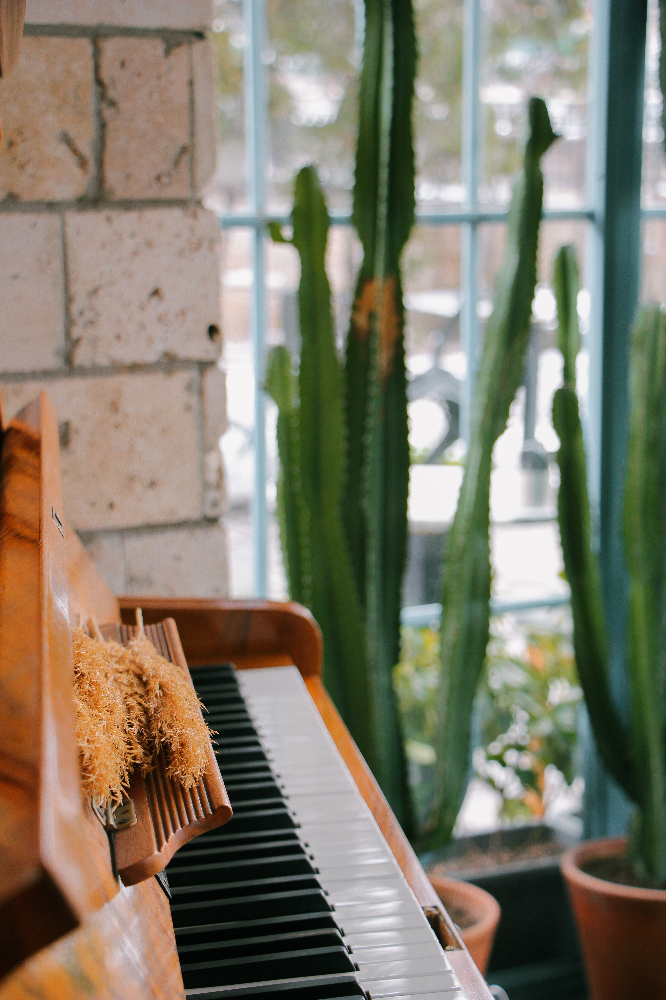
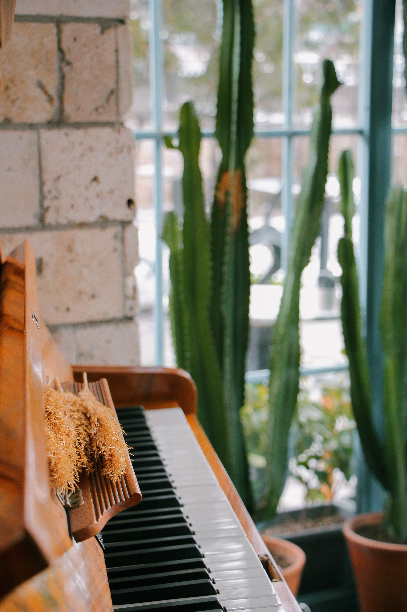

Introduction
In this website, you will be learning a lot about the Korean culture. Korean culture is a unique blend of ancient traditions and modern influences. It encompasses the customs, traditions, beliefs, and values of the Korean people. The traditional culture of Korea is heavily influenced by Confucianism, Buddhism, and Taoism, which have shaped the country's social norms and values. Korean cuisine is known for its bold flavors and variety of dishes, such as kimchi, bibimbap, and bulgogi. The traditional Korean art forms of calligraphy, pottery, and dance are still widely practiced today. The Korean language is also an important aspect of the culture, with a unique alphabet called Hangul. Popular forms of entertainment include K-pop music and K-dramas. In recent years, South Korea has become a global leader in technology and innovation, and this is also reflected in its culture.

Culture
Korean culture is a rich and diverse mix of ancient and modern traditions. It encompasses the customs, beliefs, values, and way of life of the Korean people. Some of the key elements of Korean culture include:
Overall, Korean culture has a rich history, diverse customs, and a unique blend of traditional and modern elements. In these images below, here are some ways to learn more about the Korean culture:
 

Activities
There are many activities that people in Korea participate in as part of their culture and daily life. Some popular activities include:
Overall, there are many activities in Korea that allow people to experience and enjoy the culture and daily life of the country.

You can plan a trip by clicking on this button.
Go Plan Your Trip Today!Places
Korea is a country with a rich history and diverse landscapes, and there are many places to visit and explore. Some popular places in Korea include:
| Seoul | The capital and largest city of South Korea, Seoul is a vibrant metropolis that offers a mix of modern and traditional culture. Popular tourist destinations in Seoul include Gyeongbokgung Palace, Bukchon Hanok Village, and Myeong-dong shopping district. |
|---|---|
| Jeju Island | Known as the "Hawaii of Korea," Jeju Island is a popular tourist destination known for its beautiful beaches, volcanic landscapes, and unique culture. It is a UNESCO World Heritage site, and famous for its natural wonders such as Hallasan Mountain, Seongsan Ilchulbong, and Manjanggul Lava Tube. |
| Busan | South Korea's second-largest city, Busan is a coastal city known for its beaches, temples, and delicious seafood. Popular tourist destinations in Busan include Haedong Yonggung Temple, Taejongdae Park and the Jagalchi Fish Market. |
| Gyeongju | Known as the "museum without walls," Gyeongju is a historical city that was once the capital of the ancient Silla kingdom. It is home to many historical sites and landmarks, such as the Bulguksa Temple, Cheomseongdae Observatory, and the Royal Tombs of the Silla Kings. |
| Andong | A city in the southeastern part of South Korea, Andong is famous for its traditional culture, such as the Hahoe Folk Village, a UNESCO World Heritage site, where you can experience the traditional way of life of the Joseon Dynasty. |
| The DMZ | The DMZ (Demilitarized Zone) is a strip of land that runs along the border between North and South Korea, created as a buffer zone after the Korean War. It is a popular tourist destination for those interested in the history and current situation of the Korean peninsula. |
| Mount Seorak | A mountain located in the Taebaek range, it's known for its beautiful scenery, hiking trails, and temples. |
These are just a few of the many places in Korea that are worth visiting, and each offers its own unique history, culture, and natural beauty.
Links